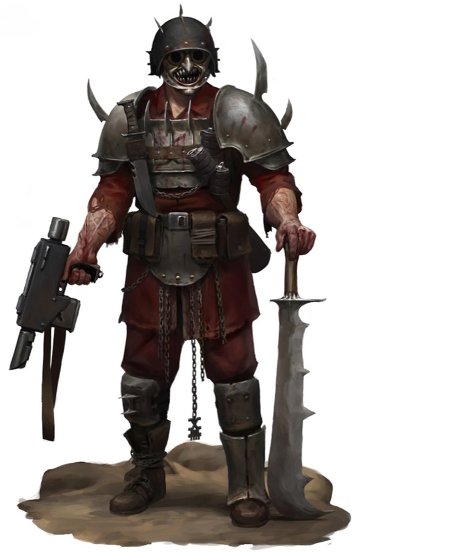

Blood Pact
| Blood Pact | |
|---|---|
 A Blood Pact trooper wearing the iron grotesque mask Artwork © Games Workshop | |
| Type | Chaos Cult, army of the Archenemy |
| Patron | Khorne |
| Origin | Ghourra, c. M38[a] |
| Leader | Urlock Gaur, Archon of the Sabbat Worlds |
| Area of operations | Sabbat Worlds, Segmentum Pacificus |
| Size | c. 750,000 warriors (Imperial estimate) |
| Elite units | Death Brigades |
| Colours | Faded blood red, iron |
| Notable battles | Battle of Balhaut, Battle of the Akkorite Peninsula |
The Blood Pact is a Chaos Cult dedicated to Khorne, the Blood God, and the principal fighting force of the Archenemy in the Sabbat Worlds. It takes its name from the oath by which each recruit binds himself to the Archon Urlock Gaur. Unlike most Khornate warbands, it fights as a disciplined army, with officers, supply, artillery and armour.[1]
Imperial analysts rank it among the most dangerous cult formations on record. It matches a regiment of the Astra Militarum in training and exceeds it in ferocity, and it has been the hardest obstacle in the Sabbat Worlds Crusade since the first years of the war, after the fall of the earlier archon Nadzybar.[2]
History
[edit]Origins on Ghourra
[edit]The Blood Pact has no surviving founding record. Fragments of legend from the Sabbat Worlds place its beginning on Ghourra, a feral world at the edge of the sector, around M38. The tribes of Ghourra obeyed a feudal overlord known as the Gaur, who kept a priesthood of Khorne. The priests became his bodyguard, and their sacrificial rites hardened into martial discipline.[1]
When the Gaur's people gained spaceflight, his rule spread to neighbouring worlds, which became known as the Sanguinary Worlds. It became a mark of rank to have sworn the "blood pact" with him. The sworn warriors grew into an army, and the army took the name of the oath.[1]
The Sabbat Worlds Crusade
[edit]Around 600.M41 the warlord Nadzybar conquered the Sabbat Worlds at the head of an alliance of warbands, each led by a lieutenant called a magister. Urlock Gaur was one of them. Imperial forces did not learn of the Blood Pact until the crusade began in 755.M41, when the High Lords of Terra named Slaydo Warmaster and ordered him to retake the sector.[1]
Slaydo broke Nadzybar's army at Balhaut and died in the victory.[b] The surviving magisters fought among themselves, and Gaur emerged as the new archon. Under him the Blood Pact became the core of the Chaos forces. Smaller warbands swore the pact to share in his spoils, and the army grew.[1]
In 771.M41, on Belshiir Binary, a force of 200 Blood Pact warriors with four stalk-tanks and two broods of Loxatl mercenaries destroyed a force of 3,000 Imperial Guardsmen on the Akkorite Peninsula. The Pact lay hidden for three solar days, then killed the Imperials in 22 solar minutes. The promethium refineries of the peninsula stayed in Chaos hands for a further fifteen solar months.[2]
Beliefs
[edit]The cult holds an unusual view of the Emperor. It does not hate Him as an enemy of the gods. It honours Him as another creature of the Warp, a prophet who saw the power of the Immaterium but taught Mankind to resist it. Its members believe the Imperium needs reform rather than ruin, and that Humanity has worshipped a warp entity all along without knowing it.[1]
The same teaching is held by the allied Sons of Sek. Imperial inquisitors regard it as especially dangerous because it makes surrender to Chaos seem a return to the truth, and because the cult prefers to recruit captured soldiers rather than slaughter them.[2]
Organisation and doctrine
[edit]Urlock Gaur studied the Astra Militarum regiments opposing him and modelled his army on them. Recruits are drilled in shooting, close combat and survival, and are taught to obey without question. They are not afraid of death, only of dying with a mission undone. The elite of the cult are the Death Brigades, who lead assaults, guard senior officers and act as the cult's equivalent of Storm Troopers.[1]
Rank is written after the name. A warrior called Mabbon who is a colonel is "Mabbon Etogaur". Higher ranks use the root "gaur" to show closeness to the Archon.
| Blood Pact rank | Imperial equivalent |
|---|---|
| Etogaur | Colonel |
| Damogaur | Major |
| High Sirdar | Captain |
| Sirdar | Lieutenant |
The cult has seized Forge worlds such as Urdesh and Neffethyl, so its troops carry freshly made Imperial-pattern lasguns and fight with combined arms: artillery, light tanks, a few Baneblades, and stalk-tanks, a lighter cousin of the Defiler. Its Gore Mages are sorcerers who turn warriors into daemonhosts, which become the lesser daemons the Sabbat Worlds call Blood Wolves. Sorcery is almost unknown among Khornate cults, and Imperial scholars treat its presence as a sign of how much the god wants the sector.[2]
Wargear and appearance
[edit]Blood Pact clothing and armour are dyed a faded red with the blood of the slain, so the troops smell of dried blood. Every human member wears a metal grotesque, a mask with a leering face and an oversized hooked nose and chin. Iron serves the ranks, and copper, bronze and silver mark officers. Gold is worn only by the etogaurs. Hands are left bare to show the ritual scars of the oath, and each warrior carries a jagged ritual knife.[1]
Timeline
[edit]| Date | Event |
|---|---|
| c. M38 | The Gaur of Ghourra forms the first sworn bodyguard[c] |
| c. 600.M41 | Nadzybar conquers the Sabbat Worlds |
| 755.M41 | The Sabbat Worlds Crusade begins under Warmaster Slaydo |
| 755–771.M41 | Slaydo dies at Balhaut; Urlock Gaur becomes Archon[d] |
| 771.M41 | Victory at the Akkorite Peninsula on Belshiir Binary |
See also
[edit]
Notes
[edit]- ^ Imperial historitors place the founding "about three thousand years" before the Sabbat Worlds Crusade of 755.M41, which gives c. M38. The date is an estimate.
- ^ The date of Balhaut is not given in the sources used here. It falls after 755.M41 and before 771.M41, and is estimated from the sequence of events.
- ^ Estimated.
- ^ Estimated.